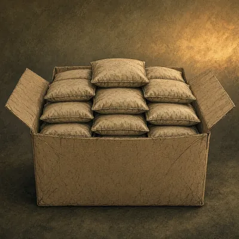
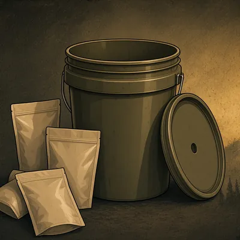
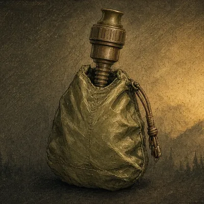
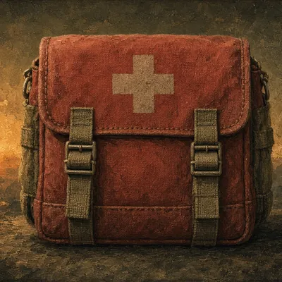
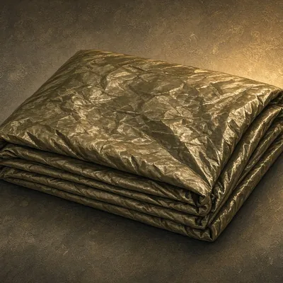

Survival & Emergency Food
Ready-to-eat meals, freeze-dried pouches, family food kits, water filters and emergency kit items for long hunts, backcountry trips, storms and power outages.
Home / Shop / Survival & Emergency Food
Disclosure: We may earn a commission from links on this site, at no extra cost to you. As an Amazon Associate I earn from qualifying purchases. Links open each store's own search. We never show prices, ratings or reviews, so check details on the retailer's site. Shop top-rated → opens the store's search sorted by customer rating. Details
🥫 Survival & Emergency Food
Food, water and a few small tools for long hunts, pack-in trips, storms and power outages, plus family-size meal kits for home. These are specific products we checked against current retailer pages. We don't show prices, so confirm what's in stock and read the label before you buy.
“Buy on Amazon,” “Buy at Bass Pro” and “Buy at Cabela's open that product's page (Amazon links use our Associates tag). The store buttons open each store's own search.
Start here
Three practical picks for long hunts, storms and power outages: a case of meals for camp, a family food bucket for home, and a water filter you can pack.

Top pickXMRE BlueLine Case of 12 with Flameless Ration Heaters
Twelve ready-to-eat meals, each with a heater, for a long hunt or a stay at camp.

Top pickMountain House Essential Bucket
A family-size bucket of freeze-dried meals to keep at home for storms and outages.

Top pickSawyer Squeeze Water Filtration System (SP302, Cnoc 1-liter bottle)
A light filter for drinking from a stream or treating water at camp.
Build a 3-day kit
A simple kit for one person on a long hunt or during a storm or power outage: food for about three days, a way to treat water, first aid, a fire starter and a light shelter. Check stock and labels on the retailer's site before you buy.
- Food for 3 days per personXMRE BlueLine Case of 12 with Flameless Ration Heaters
- Water filterSawyer Squeeze Water Filtration System (SP302, Cnoc 1-liter bottle)
- First aidAdventure Medical Kits Sportsman Series 200
- Fireust StrikeForce Fire Starter with Tinder
- ShelterS.O.L. Emergency Bivy
Opens Amazon with the MRE case, water filter, first-aid kit, fire starter and emergency bivy so you can review them and add them to your cart. Confirm stock and quantities there. The family food bucket is sold at Bass Pro and Cabela's, so it is not in this cart.
MRE cases and ration bars
XMRE BlueLine Case of 12 with Flameless Ration Heaters
A case of 12 ready-to-eat meals. XMRE lists 800 to 1,200 calories per meal, with an entrée, two or three side items, a beverage and an accessory kit (spoon, napkin and condiments). This case includes a flameless ration heater in each meal, so the food can be eaten cold or warmed. All components come fully cooked. Check the pack date on the case you receive.
Datrex Emergency Survival 2400 Calorie Food Ration Bars (12 bars)
A pack of 12 individually wrapped bars. Each bar is 200 calories, for 2,400 calories in the pack. These are a compact, no-cook ration you can keep in a vehicle, a day pack or a home kit; they do not need water or a stove. The listing notes U.S. Coast Guard approval. Check the date on the pack you receive and store it in a cool, dry place.
Freeze-dried meals
Mountain House Beef Stroganoff with Noodles
A single freeze-dried pouch with two servings. Bass Pro lists 280 calories, 12 g of protein and 32 g of carbohydrates per serving. Just add hot water to the pouch; it is ready in less than 10 minutes, with no extra dishes. Contains milk, egg and wheat.
Mountain House Chicken and Dumplings with Vegetables
A freeze-dried pouch with two servings: chicken, vegetables and dumplings in a white gravy. Bass Pro lists 300 calories, 18 g of protein and 31 g of carbohydrates per serving. Just add hot water to the pouch; it is ready in less than 10 minutes.
Mountain House Breakfast Skillet
A freeze-dried breakfast pouch with two servings of hash browns, scrambled eggs, pork sausage, peppers and onions. Bass Pro lists 260 calories, 14 g of protein and 23 g of carbohydrates per serving. Just add hot water to the pouch; it is ready in less than 10 minutes.
Mountain House Chili Mac with Beef
A freeze-dried pouch with two servings of chili mac with beef. Bass Pro and Cabela's list 230 calories, 12 g of protein and 31 g of carbohydrates per serving. Just add hot water to the pouch; it is ready in less than 10 minutes. Contains wheat.
Mountain House Lasagna with Meat Sauce
A freeze-dried pouch with two servings of lasagna with meat sauce. Bass Pro lists 220 calories, 11 g of protein and 30 g of carbohydrates per serving. Just add hot water to the pouch; it is ready in less than 10 minutes. Contains wheat, milk and soy.
Mountain House Spaghetti with Meat Sauce
A freeze-dried pouch of spaghetti with beef in a marinara sauce. Bass Pro lists 250 calories and 10 g of protein per serving, and two servings in the pouch. Just add boiling water and eat from the pouch. Dairy-free. Contains wheat. Mountain House backs this meal with a 30-year Taste Guarantee.
Peak Refuel Chicken Pesto Pasta
A two-serving freeze-dried pouch of chicken pesto pasta. Peak Refuel lists 43 g of protein in the pouch. Just add water; the meal is ready in about 10 minutes. Freeze-dried and packaged in the USA. Check the label for allergens and the date on the pouch you receive.
Peak Refuel Chicken Coconut Curry
A two-serving freeze-dried pouch of chicken coconut curry with real meat. Just add water; Peak Refuel says it is ready in 10 minutes or less. Freeze-dried and packaged in the USA. Check the label for allergens and the date on the pouch you receive.
Backpacker's Pantry Chana Masala
A freeze-dried chana masala pouch. The listing gives 19 g of protein and 620 calories in the pack, and describes it as vegan, gluten-free, dairy-free and nut-free. Made in the USA. Just add water. Read the label if you are sensitive to spice.
Good To-Go Mushroom Risotto (Single Serving)
A single-serving dehydrated mushroom risotto pouch. Just add water. Good To-Go makes these meals in the USA. Check the pouch for ingredients, allergens and the date.
Family meal kits
Mountain House Classic Bucket
Twelve freeze-dried pouches, 24 servings in all: three Beef Stew, three Beef Stroganoff, two Granola with Milk & Blueberries, two Spaghetti with Meat Sauce and two Chicken Fried Rice. Just add hot water to the pouch; meals are ready in less than 10 minutes. Mountain House backs this assortment with a 30-year Taste Guarantee. Preparing every meal in the bucket takes 18 cups of water.
Mountain House Essential Bucket
Twelve freeze-dried pouches, 22 servings in all: two Breakfast Skillet, two Scrambled Eggs with Bacon, four Beef Stew and four Rice and Chicken. Just add hot water to the pouch; meals are ready in less than 10 minutes. Mountain House backs this assortment with a 30-year Taste Guarantee. Preparing every meal in the bucket takes 17 cups of water.
ReadyWise Prepper Pack Emergency Food Supply Bucket
A 52-serving bucket of freeze-dried and dehydrated meals and drinks: one pouch each of Creamy Pasta and Vegetables, Cheesy Macaroni, Pasta Alfredo, Apple Cinnamon Cereal, Brown Sugar and Maple Multi-Grain, Southwest Beans and Rice, and Orange Delight Drink Mix. ReadyWise lists 9,440 calories in the bucket and about 34 cups of water to prepare everything, with a 25-year shelf life when stored as directed. Just add water.
Water, first aid and shelter
Sawyer Squeeze Water Filtration System (SP302, Cnoc 1-liter bottle)
Sawyer's Squeeze filter in the SP302 kit, with a 1-liter Cnoc bottle, cleaning coupling and syringe. The filter is a 0.1 micron absolute hollow-fiber membrane. Sawyer says it removes 99.99999% of bacteria such as Salmonella, cholera and E. coli, 99.9999% of protozoa including Giardia and Cryptosporidium, and 100% of microplastics, and is rated up to 100,000 gallons if you keep it clean. The system weighs less than 5 ounces. Every Squeeze unit is individually tested three times, according to Sawyer.
LifeStraw Personal Water Filter
A straw-style filter you can drink from a stream, lake or a bottle. LifeStraw says the membrane removes 99.999999% of waterborne bacteria (including E. coli and Salmonella) and 99.999% of waterborne parasites (including Giardia and Cryptosporidium), and that with proper use it can provide 4,000 liters (1,000 gallons) of drinking water. Claims on the listing are described as verified with laboratories using EPA, NSF and ASTM testing protocols.

ProductAdventure Medical Kits Sportsman Series 200
Sized for up to four people for up to four days. The kit includes bandages, medications, bleeding-control supplies and a wilderness first-aid book, organized so you can reach them quickly. Built for hunting, fishing and day trips. Know how to use what's in it before you need it.
ust StrikeForce Fire Starter with Tinder
A flint-based fire starter in a small case, about 5 inches long and 3.7 ounces. UST rates it for up to 4,000 strikes. The striker is built into the detachable cap so it stays protected. The case holds two pieces of Light-Me tinder. Works in wet weather. The listing includes a limited lifetime warranty.

ProductS.O.L. Emergency Bivy
A one-person emergency bivy from S.O.L. (Survive Outdoors Longer). The company says it reflects 90% of your body heat, weighs about 3.5 ounces, packs smaller than a 12-ounce can, and has sealed waterproof, windproof seams. You can climb inside it like a sleeping bag or turn it inside out as a blanket. Pad the ground underneath to limit heat loss. Made in the USA.
Other departments
Optics · Clothing & Boots · Tree Stands & Blinds · Calls & Decoys · Scent Control · Archery · Firearm Accessories · Game Processing · Camp & Lodging Gear · Safety · Electronics & Trail Cams · Dog Gear
Item images are illustrations, not the exact products sold.